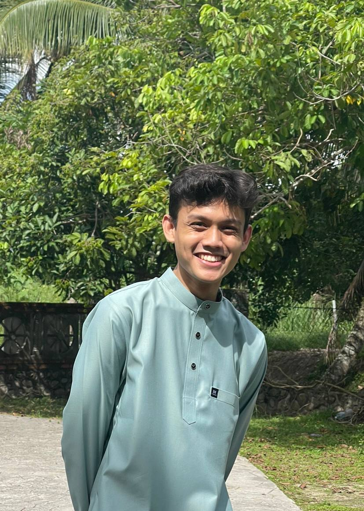

My Biodata
|  | ||
| Name | Rifaa Nifail bin Rashidi | |
|---|---|---|
| Birth Date | 2 April 2003 | |
| Gender | Male | |
| Race | Malay | |
| Nationality | Malaysia | |
| Height | 176cm | |
| Birthplace | Permatang Pauh, Penang | |
| Hobby | Playing instruments | |
I am Rifaa Nifail bin Rashidi, a calm and enthusiastic individual with a passion for music and playing musical instruments. Born on 2nd of April in 2003, I hail from Penang, where I have cultivated a strong foundation and a sense of cultural identity. For my educational background, I embarked on my academic journey at Universiti Teknologi Mara (UiTM), where I pursued in the course of College of Computing, Informatics and Mathematics. During my academic pursuits, I developed a keen interest in the management of information and consistently strived for excellence.
In my life, music has been like a special thread that ties together all the different parts of my story. It all started in high school when I played in the marching band and ever since, I loved playing instruments. I started off with the drums which I've learned from my seniors and also teachers. After a few years, I started by playing the guitar and then tried the piano and both have been like teachers, helping me understand myself better and grow as a person. Playing with other musicians showed me how different instruments can work together, kind of like people with their unique qualities. Music taught me important things like being patient and sticking with something, and it made me see that even when things aren't perfect, they can still be beautiful. So, my journey with music isn't just about playing instruments; it's a way of expressing myself and finding harmony in life.
Top 5 of my Favourite Movies
- Your Name. (Kimi no Nawa)
- Bohemian Rhapsody
- Harry Potter: Prisoner of Azkaban
- Spirited Away
- Interstellar
Favourite Songs
Here, I will list down my favourite go to songs.